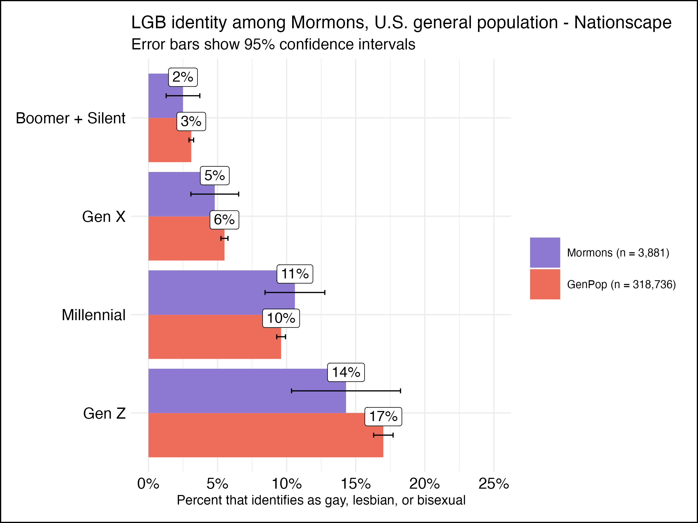

{kind=link}
| Variable | Level | Unweighted estimate | Population target | With original weights |
|---|---|---|---|---|
| Age | 18-29 | 26% | 22% | 26% |
| Age | 30-49 | 40% | 40% | 37% |
| Age | 50-64 | 21% | 22% | 22% |
| Age | 65+ | 12% | 16% | 16% |
| Region | Northeast | 6% | 4% | 5% |
| Region | Midwest | 10% | 7% | 9% |
| Region | South | 20% | 12% | 21% |
| Region | West | 64% | 76% | 65% |
| Education | High school or less | 22% | 27% | 34% |
| Education | Some college | 42% | 40% | 41% |
| Education | College grad | 22% | 23% | 15% |
| Education | Post grad | 14% | 10% | 10% |
| Gender | Female | 51% | 56% | 52% |
| Gender | Male | 49% | 44% | 48% |
| Party | Democrat | 30% | 19% | 30% |
| Party | Republican | 60% | 70% | 59% |
| Party | Independent | 10% | 11% | 10% |
| Race | White | 82% | 85% | 79% |
| Race | Non-white | 18% | 15% | 21% |
Context
- On Monday, Jana Riess (who I’ve admired for some time since reading her fascinating book) published a surprising finding in Religious News Service showing that 18% of Gen Z Mormons are lesbian, gay, or bisexual.
- Jana’s findings were picked up by several local and national news sources, including the Salt Lake Tribune and the Washington Post. They also generated some lively discussion on social media.
- Today, she posted an update explaining how the true number was probably lower than 18% due to a misunderstanding regarding the Nationscape project’s weighting scheme.
- After exploring the Nationscape dataset, I believe we can produce a better estimate for that true number by applying a new weighting scheme to just the Mormon respondents in the Nationscape study.
The problem
According to the Nationscape Representativeness Assessment (included with data download), survey responses are weighted to be representative of the US population. The assessment demonstrates through various comparisons to external sources that “the methodology employed in Nationscape generates estimates of general population characteristics [emphasis added] that are…closely aligned with government survey benchmarks.”
As Jana explains in the update to her original post, the problem is that while the weighted responses from the Nationscape dataset as a whole do a reasonably good job at describing the “general population,” there’s no reason to expect that a subset of the data will do the same for a corresponding smaller population.
In this case, the subset of the data is the 3,881 respondents (about 1% of the total) who selected “Mormon” in response to the question, “What is your present religion, if any?” Based on these respondents, we’d like to make inferences about the population of all adults in the United States who describe themselves as Mormon. However, these 3,881 individuals are different from that population of interest in some important ways. How do we know that? We don’t know precisely, since the Mormon church doesn’t publish exact figures for its membership, but there exist some resources that can help paint an approximate picture. Pew Research, in particular, has produced a number of resources for Mormon population demographics that seem to me a reasonable baseline for comparison (as I’ll mention later, this is among the decisions I’d be happy to replace with something better-informed.)
To give a couple of examples: Pew’s Religious Landscape Study estimated that in 2014, 70% of US Mormons identified as Republican or leaned Republican. In the Nationscape dataset, only 60% of Mormons identified as Republican or leaned Republican. In 2009, Pew estimated using Census-defined regions that 76% of US Mormons lived in the West—however, in fact only 64% of Nationscape Mormons were from the West.
The problem is if Republican Mormons or Mormons from the West are likely to answer the question of interest differently than other Mormons. If we don’t do anything about that, we’re not going to get a very good estimate of the true population figure.
Proposed solution
The good news is this: the Nationscape sample (like nearly every nationwide survey project) is different from its target population too, and their solution to that problem is pretty accessible. From the Representativeness Assessment:
The survey data are…weighted to be representative of the American population. Our weights are generated using a simple raking technique, as there is little benefit to more complicated approaches (Mercer et al. 2018). One set of weights is generated for each week’s survey. The targets to which Nationscape is weighted are derived from the adult population of the 2017 American Community Survey of the U.S. Census Bureau. The one exception is the 2016 vote, which is derived from the official election results released by the Federal Election Commission.
On reading that, I wondered if there was any reason a new weighting scheme couldn’t be devised for application to the Mormon subset alone. All we’d need are new targets that describe characteristics of, instead of the adult population of the US, the adult population of Mormons in the US.
I picked some variables that seemed relevant and had reasonable population estimates readily available.
- Census region (Pew, 2009)
- Age (Pew RLS, 2014)
- Gender (Pew RLS, 2014)
- Race (Pew RLS, 2014)
- Education (Pew RLS, 2014)
- Party ID (Pew RLS, 2014)
If anybody reading this has thoughts about what variables or sources might be better than those shown here, please drop a comment below. All of these—Region in particular—are somewhat dated and I’m actually quite sure better sources exist. I tried to limit myself with how long I spent on this post because I wanted to get feedback before too much time passes.
Having compiled population targets from the sources given above, I show how both the unweighted estimates and the estimates produced using the original Nationscape weights fail to accurately represent the adult population of US Mormons.
Some of the differences between the unweighted estimates and the population targets are within the margin of error or simply unimportant to the question at hand. However, if nothing else there’s clear evidence that applying the original Nationscape weights provides no systematic improvement to the unweighted estimates in terms of what we understand “Mormons in the United States” to really look like. Both the unweighted estimates and the estimates produced using the original Nationscape weights will almost certainly generate estimates for Mormonism that are, for example, too Southern, too Democrat, and too male.
We can produce much more accurate estimates by using new weights for the Mormon respondents that are based on these population targets. Using a “simple raking technique” (in my case, using the survey package in R), I bring the sample characteristics of the Mormon survey respondents more or less into alignment with what we understand the population characteristics of Mormons to really be. Here’s what the new weighted estimates and the population targets look like side by side.
| Variable | Level | With new weights | Population target |
|---|---|---|---|
| Age | 18-29 | 22% | 22% |
| Age | 30-49 | 40% | 40% |
| Age | 50-64 | 22% | 22% |
| Age | 65+ | 16% | 16% |
| Region | Northeast | 4% | 4% |
| Region | Midwest | 7% | 7% |
| Region | South | 12% | 12% |
| Region | West | 77% | 76% |
| Education | High school or less | 27% | 27% |
| Education | Some college | 40% | 40% |
| Education | College grad | 23% | 23% |
| Education | Post grad | 10% | 10% |
| Gender | Female | 56% | 56% |
| Gender | Male | 44% | 44% |
| Party | Democrat | 19% | 19% |
| Party | Republican | 70% | 70% |
| Party | Independent | 11% | 11% |
| Race | White | 85% | 85% |
| Race | Non-white | 15% | 15% |
These obviously are a much closer match. Going one step further, I highlight the “performance” of these different schemes by taking the difference between each set of estimates and the population targets. Using those differences, I compute the root-mean-square error for each scheme overall (where a higher number is more error and “worse”).1
| Method | RMSE |
|---|---|
| New weights | 0.0020 |
| Nationscape weights | 0.0600 |
| Unweighted | 0.0541 |
Interestingly, the Nationscape weights actually make Mormon estimates less like the Mormon population targets than using no weights at all would.
New results
That said, what difference do these new weights make with respect to our question at hand? Using the new weights on the sample of 3,881 Mormons, I show the following results for “Do you identify as [straight/gay/lesbian/bisexual/other]” by generation.
| Generation | Straight | LGB | Other | Prefer not to say | Refused |
|---|---|---|---|---|---|
| Boomer+Silent | 95% | 2% | 0% | 2% | 0% |
| Gen X | 93% | 5% | 1% | 1% | 0% |
| Millennial | 86% | 11% | 1% | 2% | 0% |
| Gen Z | 82% | 14% | 1% | 2% | 0% |
Furthermore, I produce confidence intervals, incorporating the adjustment recommended in the Nationscape User Guide:
Researchers should take care in calculating margins of error or standard errors due to the non-random nature of the sample. Standard calculations based on random sampling will underestimate the true magnitude of random error in our sample . As a starting place, we recommend the adjustment proposed by Rivers and Bailey (2009).
Rivers and Bailey give the following to estimate variance:
\(V(\hat{\theta}) = (1 + {s^2}_{w})\hat{\theta}(1-\hat{\theta})\) where \(s_w\) is the standard deviation of the weights
My interpretation of Rivers and Bailey follows code like this. I include it here because I’d love to hear feedback if this is a misunderstanding of that recommendation.
Using these confidence intervals (and corresponding calculations for the general population), I show the following final result:

The new estimate for LGB-identifying US Gen Z Mormons is 14% (95% CI 10.4%, 18.2%).
Discussion
This estimate is 4 percentage points lower than the original estimate of 18%. The “LGB+Other” estimate is 15%, which is 7 percentage percentage points lower than the original estimate of 22%. This seems to be somewhat less of a difference than asserted in Jana’s update to her original post, where she predicted that the true value is “around 7 to 9 percentage points lower [than was found using the default Nationscape weights].” I’d be interested to know what methods informed her updated prediction. I know I’m not necessarily aware of what external considerations may be necessary for this analysis beyond what’s specified in the documentation for this dataset.
However, my estimate sounds like it’s at least in the ballpark—and in any case, we’re talking about pretty large standard errors here. I’m also again very open to lots of potential improvements to this analysis, particularly in regards to the selection of population targets. If I had more time, I’d especially get further input in the decisions about Party ID2, for which rates have famously changed in interesting ways in the past decade and during the era of Donald Trump among American Mormons in particular. I’m further interested in better describing what kinds of bias remain after implementing this kind of weighting process. Even with the recommended addition of the variance inflation factor (and with intervals as large as they are), I can’t help but feel that I’m still underestimating the standard errors, that there’s more variability than these standard calculations capture. That, however, is also more broadly true to some extent across the survey research industry.3
One thing that gives me some confidence, though, is a certain piece of research that seems to corroborate this new, lower estimate. In 2018, researchers sent a survey to all 30,840 undergraduates at Brigham Young University to learn about “religiosity, mental health outcomes, and sexual minority identity” among the (99% Mormon) student body. The survey was university-approved and resulted in an incredible 24% response rate. The researchers estimated that the proportion of undergraduates who identified as something other than “exclusively heterosexual” at 13.1%.
Because I’m trying to wrap this up, I’m not going to get into whether that paper necessarily represents an accurate estimate of queer BYU students.4 It does, however, appear to show prevalence in the neighborhood of what the new weights for Nationscape find, and that feels encouraging.
In conclusion, I’d describe this estimate as flawed but improved. I think it better accounts for some variability due to non-response, but probably still fails to account for variability in other ways! My code for the new weighting scheme can be found along with the code for this post on my Github. If anyone has any feedback or ideas for improvement about anything I’ve done here, I’d love if you’d leave a comment or contact me directly at jacobeliason at gmail dot com.
Footnotes
I’ve used RMSE for validating predictions before but I have no idea if this is a thing w.r.t. weighting schemes. Feel free to chime in. The point here was just to somehow describe the differences between those three methods in a single metric.↩︎
For Party ID, this is true both for the specific population target I selected and for how I calculated Party ID using Nationscape variables.↩︎
One other potentially important caveat is that this Nationscape sample may overestimate the prevalence of different sexual identities across the board. One data point for that hypothesis is that Nationscape LGB estimates by generation were uniformly about 2 percentage points higher than what Gallup found for each generation in response to the same question earlier this year.↩︎
There certainly are issues with representativeness there, though—68% of respondents, for example, were female (likely inflating the estimate for queer students, since it appears more women are bisexual than men).↩︎